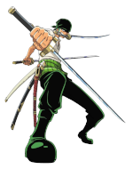
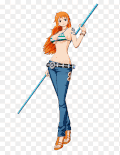
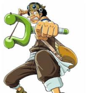
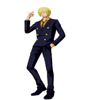
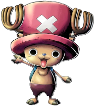
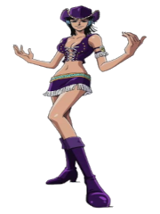
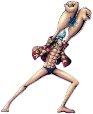
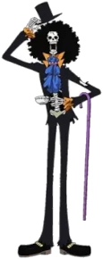
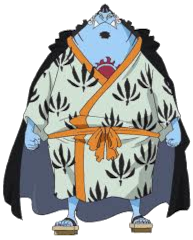

Vamos coloca-los na ordem em que entraram no bando.
- Roronoa Zoro (O Caçador De Piratas)
Zoro é o espadachim do bando, ele usa o estilo das três espadas, Zoro
tem o sonho de se
tornar o maior espadachim do mundo.

- Nami(A Gata Ladra)
Nami é uma navegadora algo essencial no Mar, o povo dela é feito de escravo
e seu principal objetivo é liberta-los.

- Usopp(Sogeking/God Ussop)
Usopp é o atirador do bando, também é um grande mentiroso.

- Sanji(Perna Negra)
Sanji é o cozinheiro do bando ele tem o sonho de encontrar o All Blue além de
ter um pequeno problema com mulheres.

- Tony Tony Chopper(Rena Humana)
Chopper é uma Rena que comeu a fruta do humano assim ganhando inteligencia humana
ele é o medico do navio.

- Nico Robin(Arqueologa)
Nico Robin é procurada desde os seus 8 anos de idade por ser de um povo que sabe ler
uma lingua antiga, algo perigoso pro governo mundial, ela comeu a Hana Hana No Mi
ela é capaz
de criar e replicar partes do seu corpo em qualquer superficie
Robin é necessaria
para Luffy se tornar o rei dos piratas por seu conhecimento Arqueologico.

- Franky(Ciborgue)
Franky é o carpinteiro do bando responsavél pelos reparos no navio, algo complicado
pois o navio de um pirata sofre ataques a todo momento.

- Brook(Esqueleto)
Brook é o musico do bando, ele permaneceu 50 anos sozinho por conta da sua fruta da ressureição
ele tem um grande amigo que o espera no inicio da Grand Line após ele dar a volta ao mundo
Brook se junta a Luffy com o intuito de concluir essa promessa de 50 anos.

- Jinbei(Timoneiro)
Por muito tempo a Nami foi navegadora e timoneira(é a pessoa que fica na direção do navio)
Jinbei é um tritão especie que consegue lutar e respirar em baixo da água.
ele é um mestre no
Karate Tritão
além de ser um otimo timoneiro.
